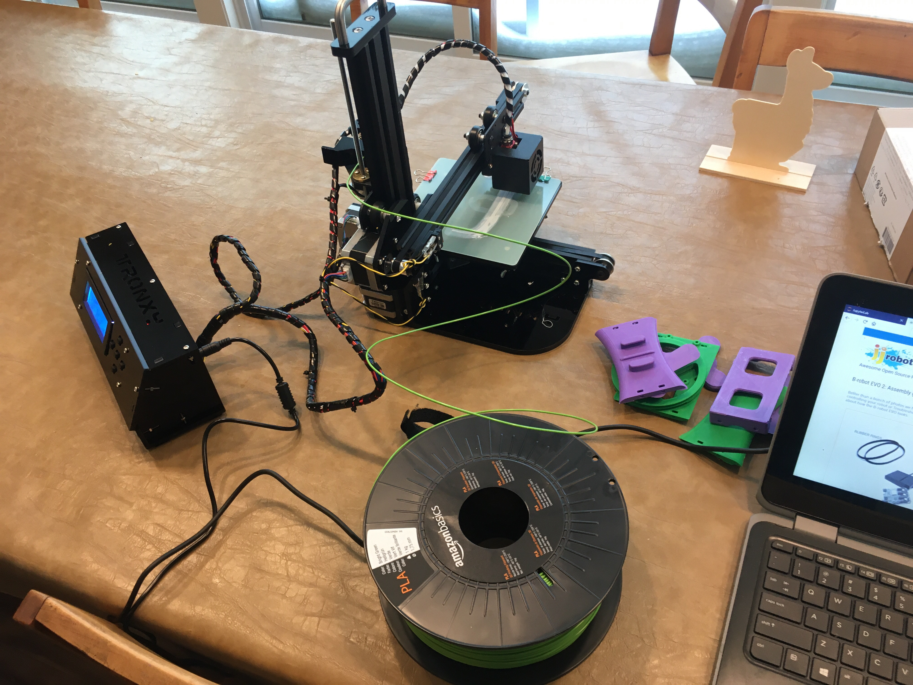

JJRobots B-Robot
Sat 18 January 2020 by Dr. Dirk Colbry
A few years ago I purchased a kit from JJRobots. The kit provides all non-plastic parts and then allows you to build a variety of robots. Up until now I only made the eggbot which tends to come out around Easter time, the kids love it.
Last week my niblets and children helped me put together a 3D printer. I used the printer to print the last few parts of the B-Robot. The bumpers came out backwards but serviceable.

This week we got together, took apart the eggbot and then assembled the b-robot. It was a lot of fun, the kids had a great time. To be honest only my nephue really had the pacients to stick it out and complete the robot but it was still a lot of fun.
The one big challenge for me was that the software did not work out of the box. it took me a while to figure out that the version of the kit I had (from a few years ago) was different than the kit currently on the JJRobots website. Fortunately, once I figured out I was working from old hardware, it was fairly easy to search the site and find the old directions.
With the software installed all the kids had a great time driving it around. It is fun to see the robot balance on two wheels and the app works great.
Both projects (eggbot and B-robot) from JJRobots were fun to build. I am looking forward to building the other projects with the kids.